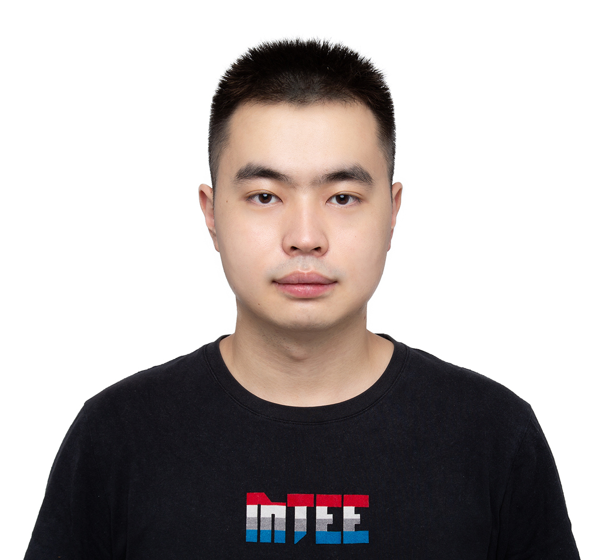

|  | Zixiao Wang, Ph.D. Student |
I am currently a Ph.D. student at the Department of Computer Science and Engineering, The Chinese University of Hong Kong (CUHK), under the supervision of Prof. Bei Yu since Fall 2022.
Email: zixiaowang97@qq.com
Github
Learning with Noisy Label
Human Pose Estimation
[C2] Zixiao Wang, Junwu Weng, Chun Yuan, Jue Wang, “Truncate-Split-Contrast: A Framework for Learning from Mislabeled Videos”, AAAI Conference on Artificial Intelligence (AAAI), 2023.
[C1] Haijin Ding, Zixiao Wang, Rebing Wu, “Enhancing the security of multi-agent networked control systems using QKD based homomorphic encryption”, IEEE Conference on Decision and Control (CDC), 2018.
Hope some good news~
Ph.D. Computer Science and Engineering, The Chinese University of Hong Kong, Aug 2022 - present
M.S. Computer Science and Technology, Tsinghua University, Sept 2019 - June 2022
B.S. Automation, Tsinghua University, Sept 2015 - June 2019
Full Postgraduate Studentship, CUHK, 2022-2026
Outstanding Graduate of Computer Science and Technology, THU, 2022
Qi Hang Scholarship, THU, 2019
Academician Ni Weidou, Scholarship Endowment Fund, THU, 2018
Zheng Geru Scholarship, THU, 2017
Comprehensive Scholarship, THU, 2016 2020